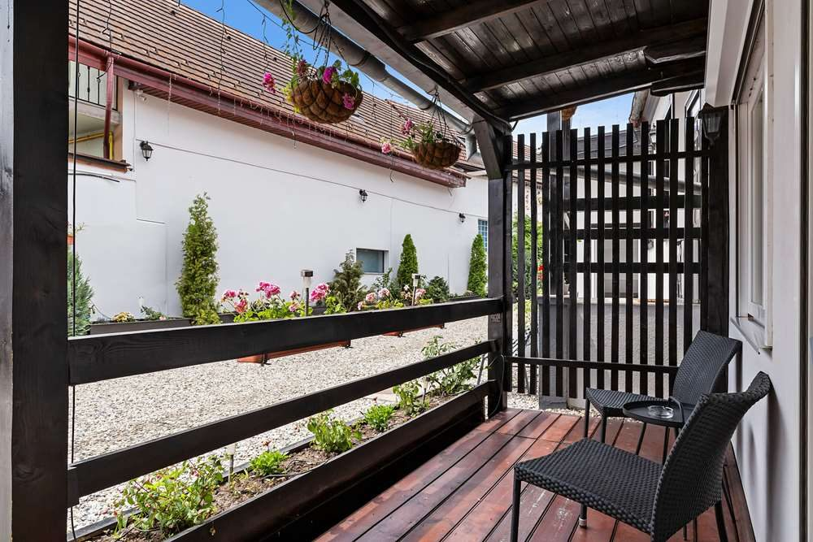
Cameră dublă standard
Pat matrimonial, baie proprie și finisaje moderne, într-un decor cald și liniștit.
- Aer condiționat
- Wi-Fi gratuit
- TV
- Frigider
300 lei/ noapte, în timpul săptămânii · mic dejun inclus
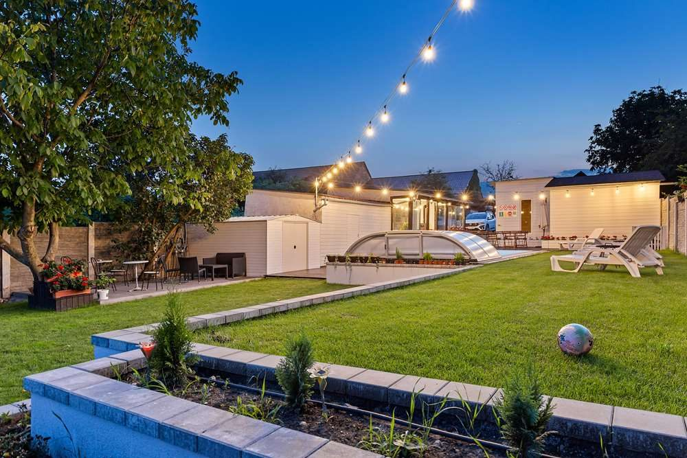
Piscină exterioară încălzită, saună, jacuzzi și o grădină liniștită — camere moderne și mic dejun bufet inclus, pe Strada Eduard Albert Bielz, în cartierul Turnișor.
La Pensiunea Alina — Adults Only am gândit fiecare colț pentru cei care caută un refugiu departe de agitația cotidiană. Decorul îmbină armonios elemente clasice cu cele contemporane, oferind un sentiment plăcut de confort și tihnă.
Suntem la doar câțiva kilometri de centrul medieval al Sibiului — aproximativ 3,4 km de Turnul Sfatului și 4 km de Piața Mare — un punct de plecare excelent pentru a descoperi orașul, dar suficient de retras cât să te bucuri de pace după o zi plină.
„Am creat spațiul ideal pentru a vă face să vă simțiți ca acasă și, totodată, să vă puteți bucura de intimitate.” Această atenție la detalii se regăsește în fiecare aspect al șederii — de la piscină și zona de wellness până la micul dejun de dimineață.
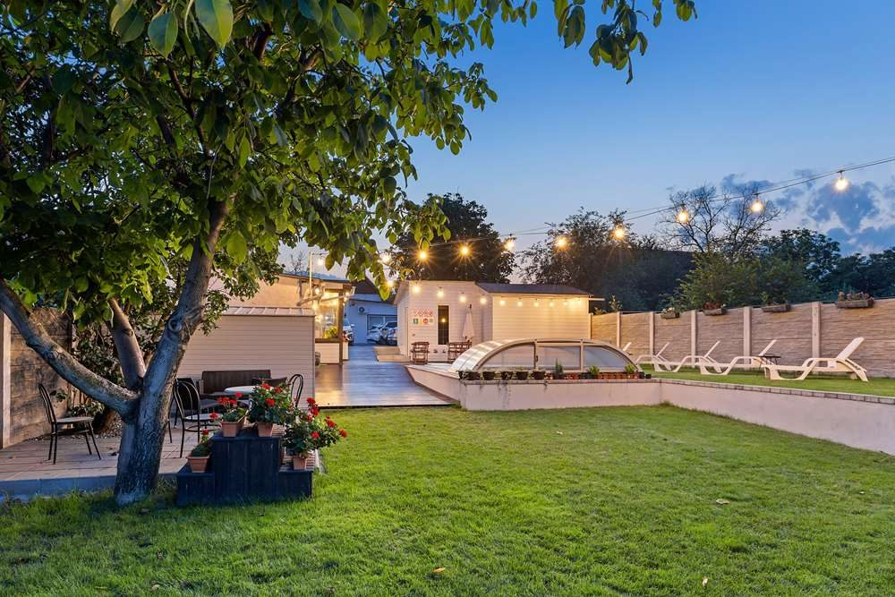
Un sejur gândit pentru relaxare, de la piscină până la ultima felie de tort la micul dejun.
Piscină exterioară încălzită cu șezlonguri, plus o zonă de wellness cu saună și jacuzzi — perfect pentru a te destinde după o zi de explorat Sibiul.
În fiecare dimineață servim un mic dejun tip bufet cu produse locale, preparate calde și patiserie proaspătă — tariful include cazare cu mic dejun.
Un cadru „adults only”, retras, cu grădină, terasă și parcare privată gratuită — liniștea de care ai nevoie, la doar câțiva kilometri de centru.
Pensiunea are 8 camere duble standard, fiecare cu pat matrimonial și baie proprie, mobilate modern, cu tot ce trebuie pentru un sejur confortabil.

Pat matrimonial, baie proprie și finisaje moderne, într-un decor cald și liniștit.
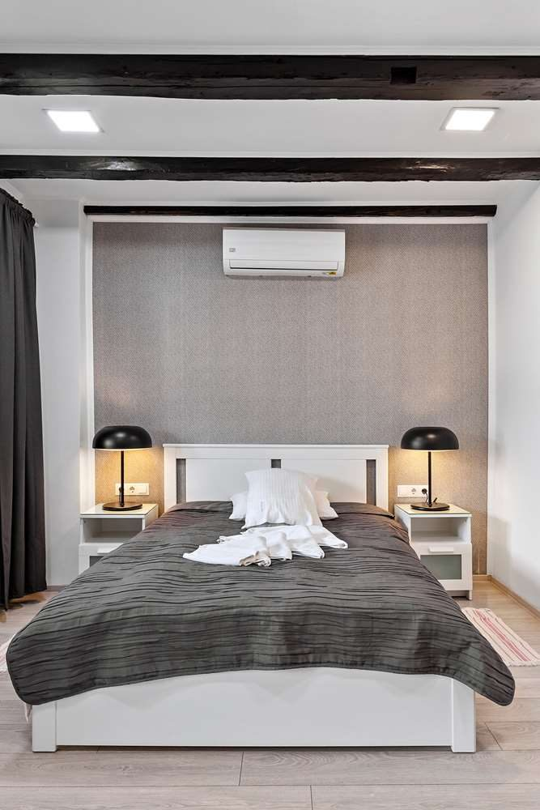
Aceleași dotări moderne, într-un decor cu personalitate — o alegere plăcută pentru un sejur romantic.
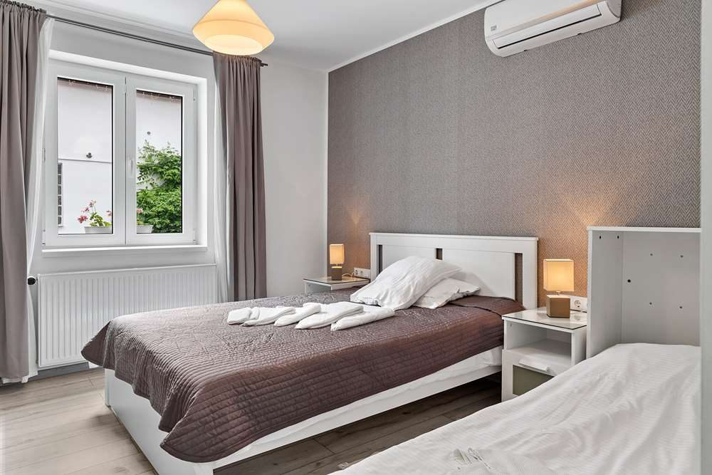
Pardoseală din parchet, mobilier de calitate și o baie proprie — totul pentru un somn odihnitor.
Piscină, saună și jacuzzi, plus toate serviciile care fac dintr-un sejur o adevărată pauză.
Piscină exterioară sezonieră, încălzită, cu șezlonguri și bar la piscină.
Zonă de wellness cu saună uscată și jacuzzi, pentru un răsfăț deplin.
Bufet de dimineață cu produse locale, preparate calde și patiserie.
Parcare privată gratuită în incintă, la îndemâna oaspeților.
Internet Wi-Fi gratuit în camere și în spațiile comune.
Grădină îngrijită, foișor, terasă la soare și o zonă de relaxare cu TV.
Spațiu pentru întâlniri și evenimente, potrivit și pentru team-building.
Camere climatizate, izolate fonic, cu încălzire și mini-bar.
Piscina, grădina, camerele și zona de wellness care te așteaptă în Sibiu.
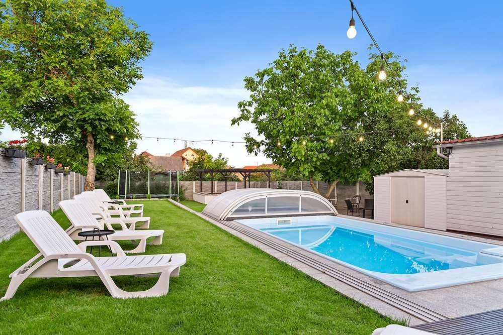
Piscină exterioară încălzită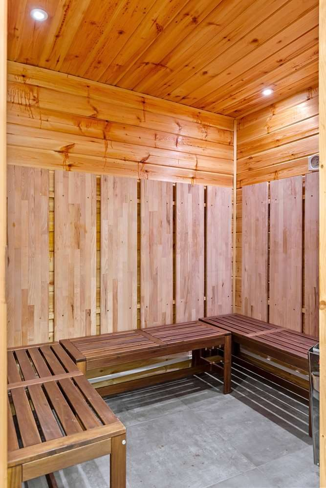
Saună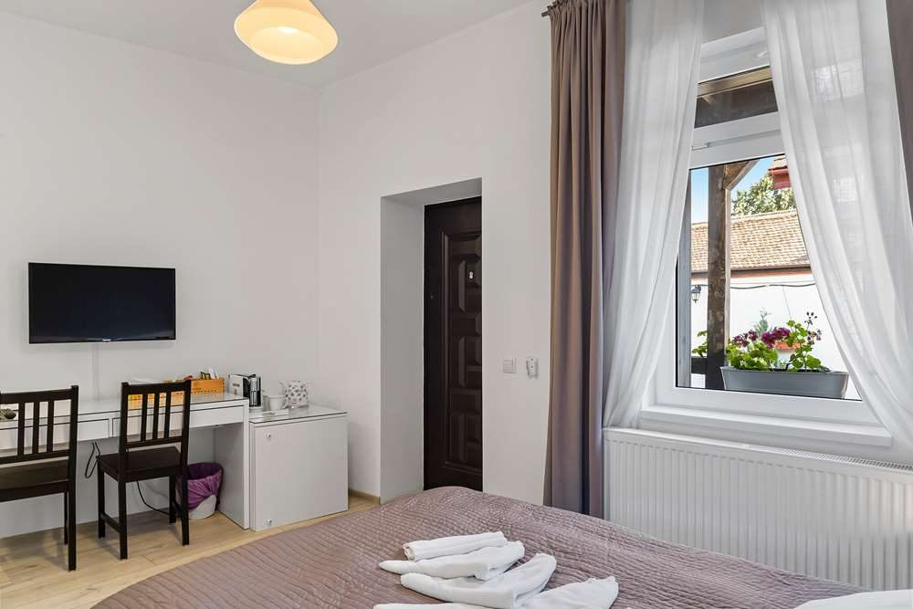
Cameră dublă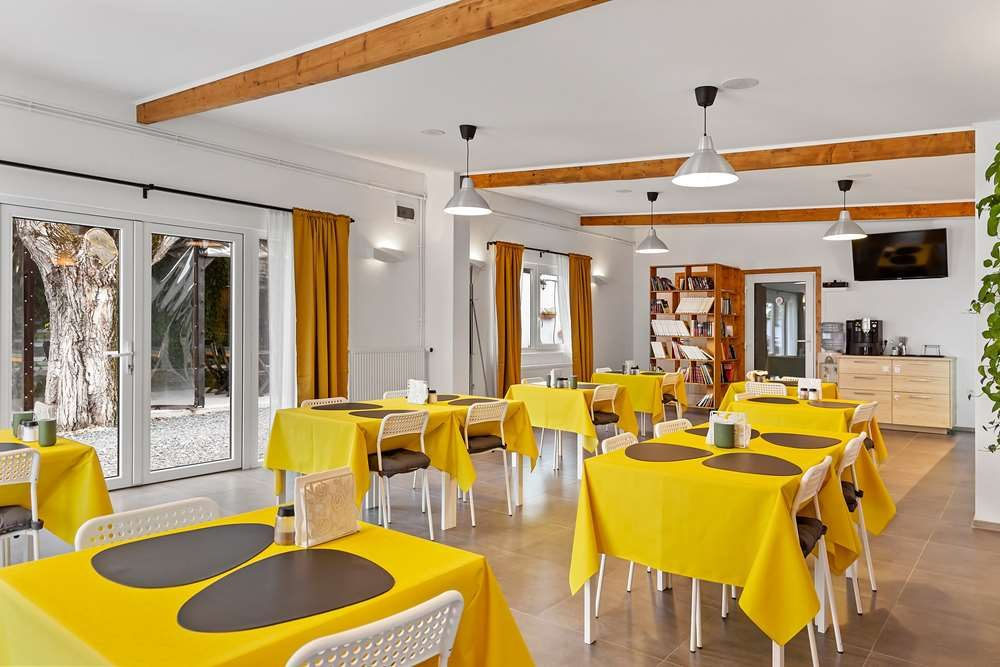
Sala de mic dejun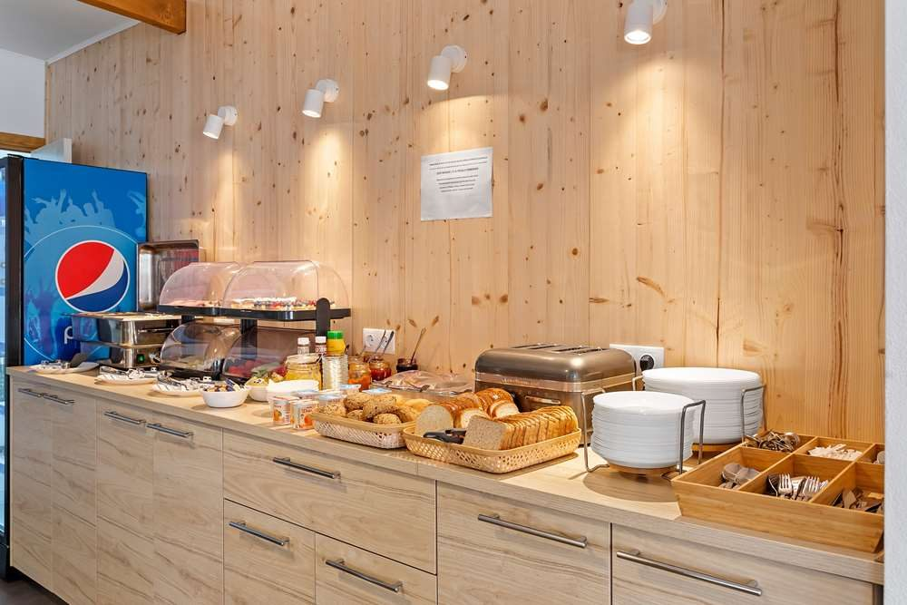
Mic dejun bufet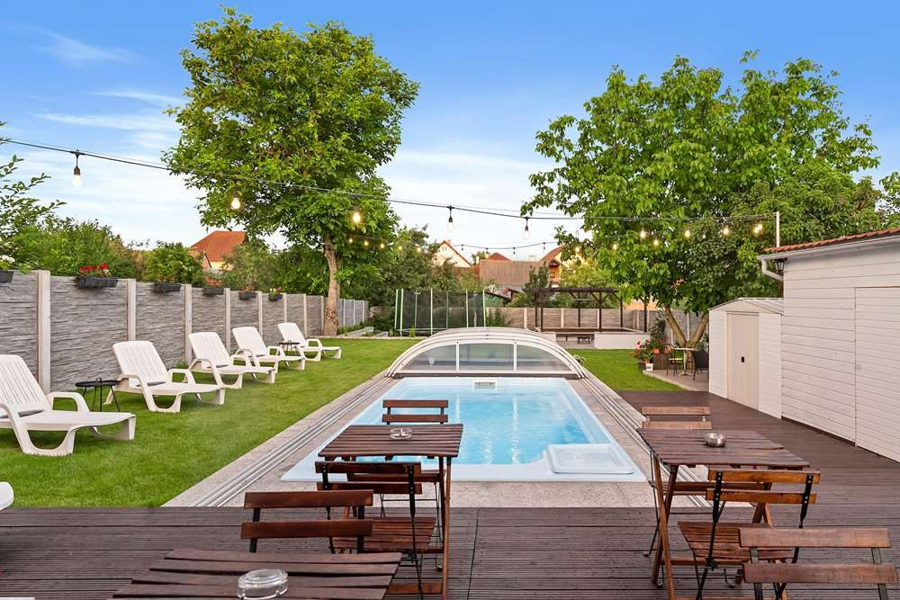
Foișor & terasă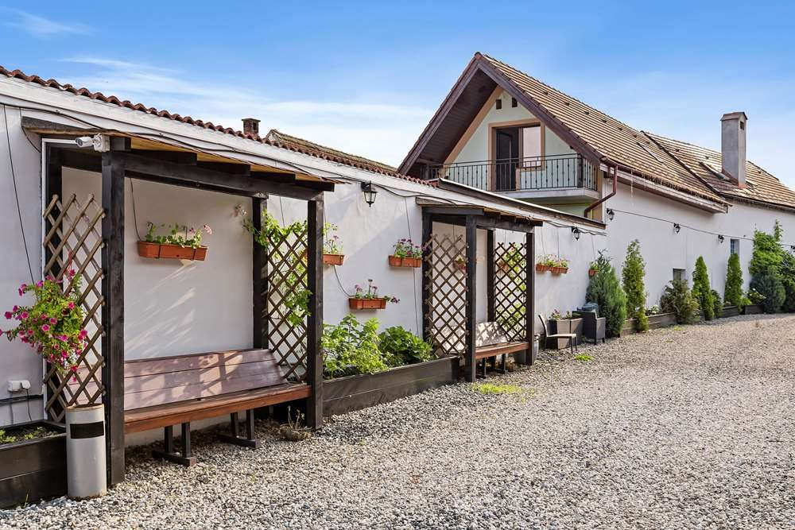
Baie propriePeste 450 de recenzii ale oaspeților. Iată ce apreciază cel mai des.
„La Pensiunea Alina totul este perfect: camerele sunt foarte curate și amenajate cu mult bun-gust.”
„Curat, liniștit și gazde ospitaliere. Piscina și zona de relaxare sunt exact ce îți dorești după o zi în oraș.”
„Un refugiu numai pentru adulți, cu parcare proprie și o terasă superbă. Ne-am simțit ca acasă.”
Rating agregat 9,5/10 din peste 450 de recenzii · vezi mai multe pe pagina de Facebook